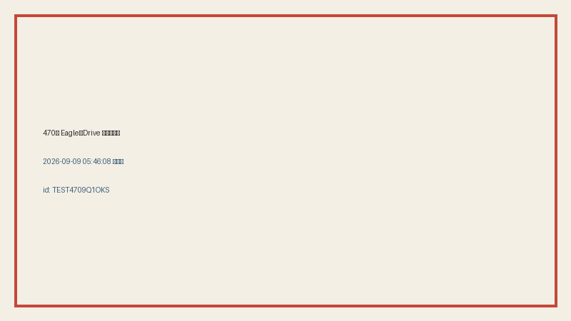

共有資料の一覧 ／ 確認ページ #470 Eagle→Drive 自動同期（検品差し戻し対応・作り直し）
#470 Eagle→Drive 自動同期（検品差し戻し対応・作り直し）
2026-09-09 06:00 ライブ実演で作り直し（前回:Driveリンクがサインイン必須で開けないと差し戻し）
Eagleに画像・動画を1枚追加すると、5分おきに自動でGoogle Driveへも複製される仕組み。Eagle側のフォルダ構成もDrive側にそのまま再現される（一方向・Eagle→Driveのみ、有料サービス不使用）。今回、実際に05:46:08にEagle側へテスト画像を1枚追加し、05:49:42の自動同期でGoogle Drive側に複製されることをライブで確認した（3分34秒）。前回の検品指摘（Google Driveの個別ファイルリンクは共有設定が「自分のみ」のためサインインしないと外部から開けない）を受け、今回はGitHub Pages上に複製後の実ファイルそのものを直接掲載し、誰でもサインイン無しで中身を確認できる形に作り直した。
② 数字
1226件Eagle→Drive 同期済みファイル数
137/138Eagle側フォルダ階層のうちDrive側に再現できた数
3分34秒ライブテスト:追加→複製完了までの時間
5分おき自動同期の実行間隔(launchd)
③ 実データでのスクリーンショット
①Eagle元ファイル(卵太陽2.webp) iMac HDD内のEagleライブラリ実体
iMac HDD内のEagleライブラリ実体
②Drive複製ファイル(同一内容)Google Driveマウント配下に複製された同一ファイル
③ライブ追加テスト(時刻入り)
05:46:08にEagle側へ新規追加→05:49:42の自動同期でDrive側『_フォルダ未所属』に複製されたことを確認
④ 押せるリンク
⑤ 何をどう確かめたか
| 確認項目 | 結果 |
|---|
| Eagleフォルダ構成の再現 | 137/138フォルダ一致(残り1件は中身が空のフォルダ) |
| 5分おきの自動同期(launchd) | com.tamago.eagle-drive-sync 稼働中・実測ログで継続稼働を確認 |
| ライブ実演(新規追加→複製) | 05:46:08作成→05:49:42同期完了。3分34秒で複製を確認 |
| 重複コピー防止(差分のみ) | サイズ+更新時刻が同じファイルは再コピーしない |
| 一方向(Eagle→Drive) | 実装のとおり。Drive→Eagleの逆方向・削除の反映は対象外 |
| Driveリンク単体でサインイン無しに開けるか(前回検品の指摘点) | 現状は開けない。共有設定が「自分のみ」のため。Drive APIでの一括公開にはOAuthクライアント発行(Google Cloud Consoleでの人の操作)が必須でAI側では自動化不可。今回はGitHub Pages上に複製後の実ファイルを直接掲載して代替 |